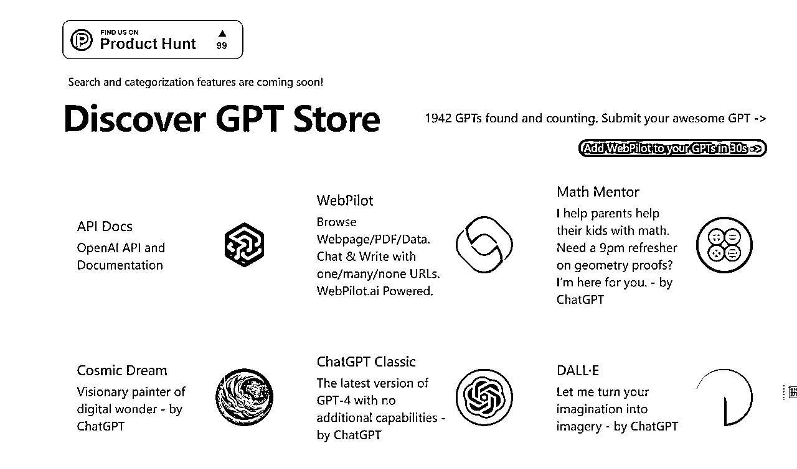
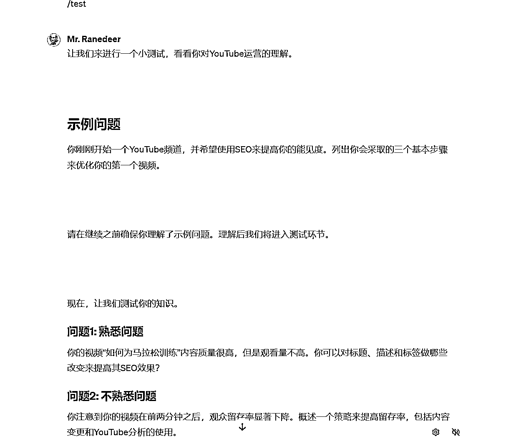

来源：https://t3vl04fm23.feishu.cn/docx/WXfLdq9gDoVnwTx9MP9coSlTnJe
前两天的AI春晚大家都听说了嘛
Sam Altman 在 Open AI Dev Day 上实时演示了如何在几分钟内，用「自然语言」创建一个你觉得有价值的个人定制的GPTs
自此之后，梗图层出不穷
比如经典的：
“山姆·奥特曼毁掉了我300万美元的创业公司 而我只得到了500美元的OpenAl APl信用卡代金券”
包括这两天，chatgpt已经被挤爆了，全球人民都失去了自己的电子精神鸦片
11 月 8 日上午 6 点左右开始，ChatGPT 服务器宕机超过 90 分钟，用户访问会收到「ChatGPT 目前已满载（ChatGPT is at capacity right now）」的消息。
随后，OpenAI 接连发布两次「服务器中断」警告 —— 一次部分中断、一次全线中断，并称正在调查宕机原因，进行修复和监控。
咱就是说，真的有那么牛逼吗？
鹅老师想说：是的，就是那么牛逼
前6个月的很多玩法都被瞬间推翻了，新时代将会降临
GPTs 不需要你有编程能力，只需要非常非常简单的一句自然语言，任何人都可以在界面上点点按钮就定制一个特定功能的 ChatGPT
目前已经被各路大神玩出花来了，定制调酒师，nft分析师，人工智能视频创作者……
下面网站链接是大佬建的目前知名gpts的合集，大家有需要自取
或许在未来，我们能看到GPT 商店和各种第三方平台又一次进入混战模式
https://www.gptshunter.com/

这里给大家展示一下我构建一个小红书文案写手的过程
写一句你的需求，进行对话。整个构建GPT的用户体验都是围绕自然语言进行的
给她起个名字，头像都自动使用dalle-3给你做好了，甚至包括启动建议的问题，比如：
写一篇关于一个新的护肤品的帖子
建议一个时装的标题
为我最近的旅行创造一个旅行的故事
起草一个健身旅程的帖子
注意这个交互界面，左边是对模型进行调整的地方
右边是跟模型进行测试的地方
到这里，优质语料库的必要性就慢慢凸显了
这里我使用了生财公众号里与小红书有关的内容
比如，一个爆款标题该怎么出？
生财公众号/航海手册里的文字就是最好的教材
【这里引用了圈友@谢不言 的如何花2.8元成本批量生产浏览过万的小红书笔记，实现月变现5万？】
一：简单聚合型
公式：情绪+数字+全部可得价值（懒惰心理）
怎么去用：调动情绪词，再加上数字，给他一种看我这篇就够了的感觉
举例1、吐血整理，10大互联网平台引流私域方法！
举例2、建议收藏，一张图告诉你7大类运营岗工作内容！
举例3、码住！写方案的万能模板，每次都被夸😎
二、如何去做型
公式：如何做+事件（具备稀缺性、冲突、吸引眼球）
怎么去用：
1、把你文案能解决的问题，反问出来，比如你文案是解决经济独立的，那你直接提问！
2、要有对话感，说明给谁看的对象；
3、最好事件具备冲突，能吸引眼球
举例1：如何在大一就实现经济独立🔥经验贴
举例2：新手创业 如何做到3天精准引流上百人
举例3：实体店惨淡，实体人应该如何支撑下去？
三：人群痛点型
公式：人群+痛点+如何+解决方案
怎么去用：针对人群的痛点进行提问，然后根据正文，后面给出解决方案，核心是问题需要针对痛点去提
举例：淘宝新店不刷单如何引流？你得想明白这件事
举例：做微商没有客源？如何精准引流？微商如何涨粉
举例：实体店生意惨淡怎么办？怎么引流客源最快？
四：结果呈现型
公式：事件关键词+如何+数字呈现+结果
怎么用：根据正文提炼出关键词，能解决什么问题，再把解决过程结果说出来，核心是让用户产生好奇
举例：招生引流 | 我们是如何做到1个月1000人的
举例：开工作室一个月｜好友从0️⃣到3000➕！！
举例：饰品创业 新手如何做到3天精准引流上百人
这里使用了八爪鱼采集器，爬出了优质标题库的excel
第一栏，有大量的对标爆款标题，复制过去，让它进行学习
这里不使用excel的根本原因是，让它自己分析excel比较复杂，比较慢，不如直接投喂文本资料快
上传各式各样的文件，pdf、ppt、excel、word、image、epub、xmind、html都可以作为知识上传
这里指路刀姐的《chatgpt投喂指南》，原理基本完全一致
这些上传过的资料都被留存在knowledge里面，时刻影响着模型的决策
比如我自己有学雅思的需求 我把雅思资料全部传到里面，就可以帮助我进行学习
记住，你在调教界面的所有内容，都是不会保存的！！！
这里因为我中间退出去了所以记录丢失了，所以之前所有内容都不见了！
这一部分其实就是跟之前用chatgpt的逻辑是一样的
在左边进行底层的修改
右边界面进行测试
原理很简单
左边是地基
右边是装修
装修遇到问题就对底子进行修改
主打一个哪里不行点哪里
比如，右边没有emoji
你就在规则里写上添加少量的emoji
比如，右边老是很啰嗦
你就添加规则，不用bb那么多……
本质就跟教小孩一样
经过反复的实验，达到你自己满意的程度时，进行发布与使用
点击confirm，开始进行对话和使用
这是我在GitHub上找到的一个高中生出的学习助手，我觉得这是个很有意思的交互模式，给我一种定制化app的感觉
安装方式：
https://github.com/JushBJJ/Mr.-Ranedeer-AI-Tutor
找到quick start guide，点击this link
直接跳转到新的页面，输入语言-中文
我想学youtube运营 输入/plan 它给了我一个学习计划
开始给我进行讲解
最重要的功能：考试 输入/test 进行一些有趣的考试

无限耐心+无限细节解答的老师，谁不喜欢啊
任何一个人如果手头有优质的课程素材，喂给它，都可以定制一个自己的学习助手
AI工具的使用门槛是越来越低了，以前定制一个这样的模型，阅读这么多字数，做一个嵌套性的东西，得上embedding，现在只要会打字会说话就行
所以，以后更加重要的还是，在一个行业里的经验积累、沉淀，对于AI给出的答案能做出一个明确的判断，预防它给出一些看着很对的废话
从前拥有大量自己沉淀下来的内容的人，在新时代可能相当于拥有了一个数字资产，这些资产可以借AI的力度扩展放大无数倍
ok，就这样吧